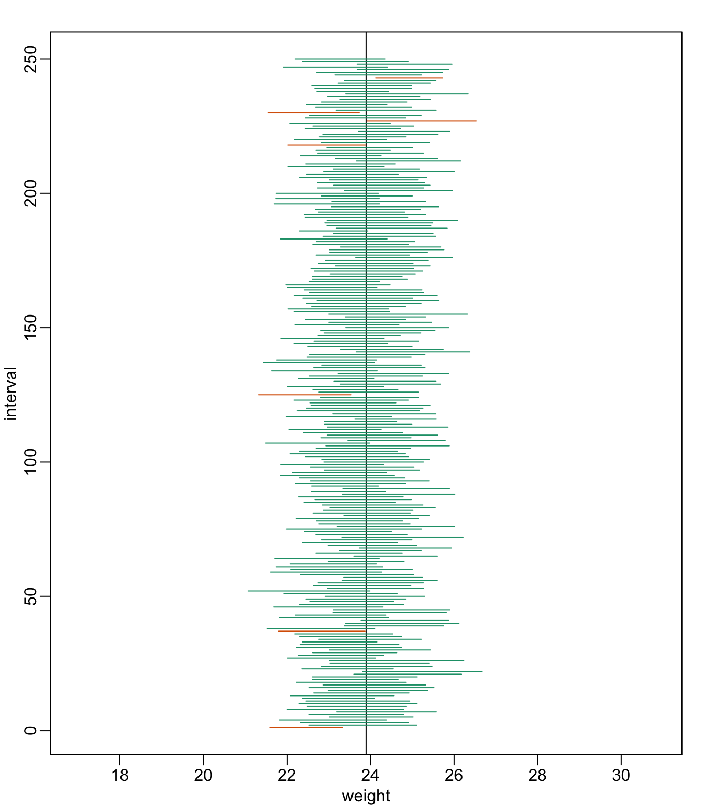
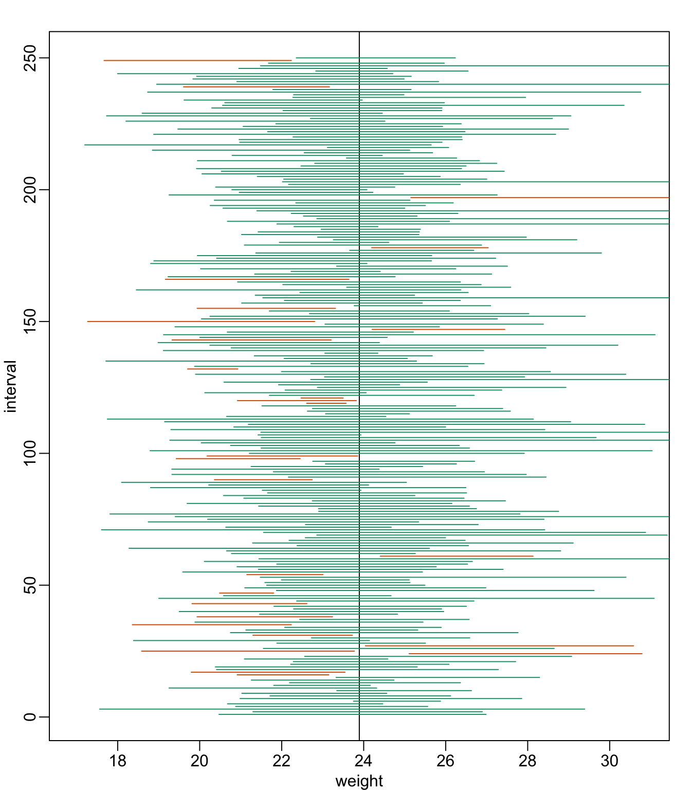
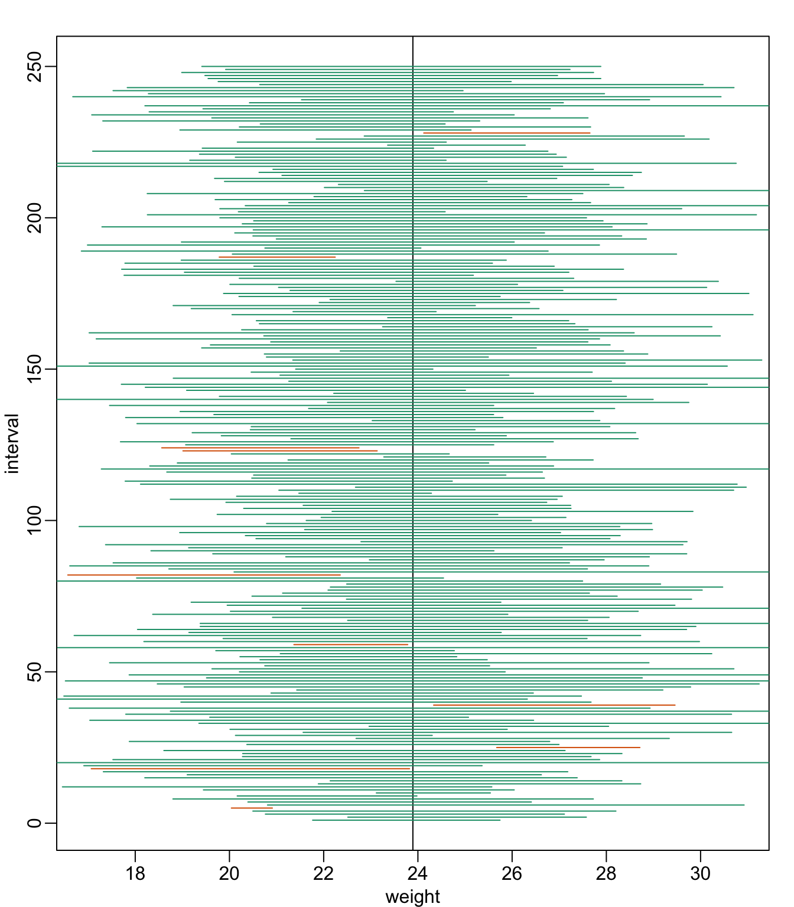

dat <- read.csv("mice_pheno.csv")
chowPopulation <- dat[dat$Sex=="F" & dat$Diet=="chow",3]Confidence Intervals
Confidence Intervals
We have described how to compute p-values which are ubiquitous in the life sciences. However, we do not recommend reporting p-values as the only statistical summary of your results. The reason is simple: statistical significance does not guarantee scientific significance. With large enough sample sizes, one might detect a statistically significance difference in weight of, say, 1 microgram. But is this an important finding? Would we say a diet results in higher weight if the increase is less than a fraction of a percent? The problem with reporting only p-values is that you will not provide a very important piece of information: the effect size. Recall that the effect size is the observed difference. Sometimes the effect size is divided by the mean of the control group and so expressed as a percent increase.
A much more attractive alternative is to report confidence intervals. A confidence interval includes information about your estimated effect size and the uncertainty associated with this estimate. Here we use the mice data to illustrate the concept behind confidence intervals.
Confidence Interval for Population Mean
Before we show how to construct a confidence interval for the difference between the two groups, we will show how to construct a confidence interval for the population mean of control female mice. Then we will return to the group difference after we’ve learned how to build confidence intervals in the simple case. We start by reading in the data and selecting the appropriate rows:
The population average \(\mu_X\) is our parameter of interest here:
mu_chow <- mean(chowPopulation)
print(mu_chow)[1] 23.89338We are interested in estimating this parameter. In practice, we do not get to see the entire population so, as we did for p-values, we demonstrate how we can use samples to do this. Let’s start with a sample of size 30:
N <- 30
chow <- sample(chowPopulation,N)
print(mean(chow))[1] 24.03267We know this is a random variable, so the sample average will not be a perfect estimate. In fact, because in this illustrative example we know the value of the parameter, we can see that they are not exactly the same. A confidence interval is a statistical way of reporting our finding, the sample average, in a way that explicitly summarizes the variability of our random variable.
With a sample size of 30, we will use the CLT. The CLT tells us that \(\bar{X}\) or mean(chow) follows a normal distribution with mean \(\mu_X\) or mean(chowPopulation) and standard error approximately \(s_X/\sqrt{N}\) or:
se <- sd(chow)/sqrt(N)
print(se)[1] 0.6875646Defining the Interval
A 95% confidence interval (we can use percentages other than 95%) is a random interval with a 95% probability of falling on the parameter we are estimating. Keep in mind that saying 95% of random intervals will fall on the true value (our definition above) is not the same as saying there is a 95% chance that the true value falls in our interval. To construct it, we note that the CLT tells us that \(\sqrt{N} (\bar{X}-\mu_X) / s_X\) follows a normal distribution with mean 0 and SD 1. This implies that the probability of this event:
\[ -2 \leq \sqrt{N} (\bar{X}-\mu_X)/s_X \leq 2 \]
which written in R code is:
pnorm(2) - pnorm(-2)[1] 0.9544997…is about 95% (to get closer use qnorm(1-0.05/2) instead of 2). Now do some basic algebra to clear out everything and leave \(\mu_X\) alone in the middle and you get that the following event:
\[ \bar{X}-2 s_X/\sqrt{N} \leq \mu_X \leq \bar{X}+2s_X/\sqrt{N} \]
has a probability of 95%.
Be aware that it is the edges of the interval \(\bar{X} \pm 2 s_X / \sqrt{N}\), not \(\mu_X\), that are random. Again, the definition of the confidence interval is that 95% of random intervals will contain the true, fixed value \(\mu_X\). For a specific interval that has been calculated, the probability is either 0 or 1 that it contains the fixed population mean \(\mu_X\).
Let’s demonstrate this logic through simulation. We can construct this interval with R relatively easily:
Q <- qnorm(1- 0.05/2)
interval <- c(mean(chow)-Q*se, mean(chow)+Q*se )
interval[1] 22.68506 25.38027interval[1] < mu_chow & interval[2] > mu_chow[1] TRUEwhich happens to cover \(\mu_X\) or mean(chowPopulation). However, we can take another sample and we might not be as lucky. In fact, the theory tells us that we will cover \(\mu_X\) 95% of the time. Because we have access to the population data, we can confirm this by taking several new samples:
library(rafalib)
B <- 250
mypar()
plot(mean(chowPopulation)+c(-7,7),c(1,1),type="n",
xlab="weight",ylab="interval",ylim=c(1,B))
abline(v=mean(chowPopulation))
for (i in 1:B) {
chow <- sample(chowPopulation,N)
se <- sd(chow)/sqrt(N)
interval <- c(mean(chow)-Q*se, mean(chow)+Q*se)
covered <-
mean(chowPopulation) <= interval[2] & mean(chowPopulation) >= interval[1]
color <- ifelse(covered,1,2)
lines(interval, c(i,i),col=color)
}
You can run this repeatedly to see what happens. You will see that in about 5% of the cases, we fail to cover \(\mu_X\).
Small Sample Size and the CLT
For \(N=30\), the CLT works very well. However, if \(N=5\), do these confidence intervals work as well? We used the CLT to create our intervals, and with \(N=5\) it may not be as useful an approximation. We can confirm this with a simulation:
mypar()
plot(mean(chowPopulation)+c(-7,7),c(1,1),type="n",
xlab="weight",ylab="interval",ylim=c(1,B))
abline(v=mean(chowPopulation))
Q <- qnorm(1- 0.05/2)
N <- 5
for (i in 1:B) {
chow <- sample(chowPopulation,N)
se <- sd(chow)/sqrt(N)
interval <- c(mean(chow)-Q*se, mean(chow)+Q*se)
covered <- mean(chowPopulation) <= interval[2] & mean(chowPopulation) >= interval[1]
color <- ifelse(covered,1,2)
lines(interval, c(i,i),col=color)
}
Despite the intervals being larger (we are dividing by \(\sqrt{5}\) instead of \(\sqrt{30}\) ), we see many more intervals not covering \(\mu_X\). This is because the CLT is incorrectly telling us that the distribution of the mean(chow) is approximately normal with standard deviation 1 when, in fact, it has a larger standard deviation and a fatter tail (the parts of the distribution going to \(\pm \infty\)). This mistake affects us in the calculation of Q, which assumes a normal distribution and uses qnorm. The t-distribution might be more appropriate. All we have to do is re-run the above, but change how we calculate Q to use qt instead of qnorm.
mypar()
plot(mean(chowPopulation) + c(-7,7), c(1,1), type="n",
xlab="weight", ylab="interval", ylim=c(1,B))
abline(v=mean(chowPopulation))
##Q <- qnorm(1- 0.05/2) ##no longer normal so use:
Q <- qt(1- 0.05/2, df=4)
N <- 5
for (i in 1:B) {
chow <- sample(chowPopulation, N)
se <- sd(chow)/sqrt(N)
interval <- c(mean(chow)-Q*se, mean(chow)+Q*se )
covered <- mean(chowPopulation) <= interval[2] & mean(chowPopulation) >= interval[1]
color <- ifelse(covered,1,2)
lines(interval, c(i,i),col=color)
}
Now the intervals are made bigger. This is because the t-distribution has fatter tails and therefore:
qt(1- 0.05/2, df=4)[1] 2.776445is bigger than…
qnorm(1- 0.05/2)[1] 1.959964…which makes the intervals larger and hence cover \(\mu_X\) more frequently; in fact, about 95% of the time.
Connection Between Confidence Intervals and p-values
We recommend that in practice confidence intervals be reported instead of p-values. If for some reason you are required to provide p-values, or required that your results are significant at the 0.05 of 0.01 levels, confidence intervals do provide this information.
If we are talking about a t-test p-value, we are asking if differences as extreme as the one we observe, \(\bar{Y} - \bar{X}\), are likely when the difference between the population averages is actually equal to zero. So we can form a confidence interval with the observed difference. Instead of writing \(\bar{Y} - \bar{X}\) repeatedly, let’s define this difference as a new variable \(d \equiv \bar{Y} - \bar{X}\) .
Suppose you use CLT and report \(d \pm 2 s_d/\sqrt{N}\), with \(s_d = \sqrt{s_X^2+s_Y^2}\), as a 95% confidence interval for the difference and this interval does not include 0 (a false positive). Because the interval does not include 0, this implies that either \(D - 2 s_d/\sqrt{N} > 0\) or \(d + 2 s_d/\sqrt{N} < 0\). This suggests that either \(\sqrt{N}d/s_d > 2\) or \(\sqrt{N}d/s_d < 2\). This then implies that the t-statistic is more extreme than 2, which in turn suggests that the p-value must be smaller than 0.05 (approximately, for a more exact calculation use qnorm(.05/2) instead of 2). The same calculation can be made if we use the t-distribution instead of CLT (with qt(.05/2, df=2*N-2)). In summary, if a 95% or 99% confidence interval does not include 0, then the p-value must be smaller than 0.05 or 0.01 respectively.
Note that the confidence interval for the difference \(d\) is provided by the t.test function:
t.test(treatment,control)$conf.int[1] -0.04296563 6.08463229
attr(,"conf.level")
[1] 0.95In this case, the 95% confidence interval does include 0 and we observe that the p-value is larger than 0.05 as predicted. If we change this to a 90% confidence interval, then:
t.test(treatment,control,conf.level=0.9)$conf.int[1] 0.4871597 5.5545070
attr(,"conf.level")
[1] 0.90 is no longer in the confidence interval (which is expected because the p-value is smaller than 0.10).